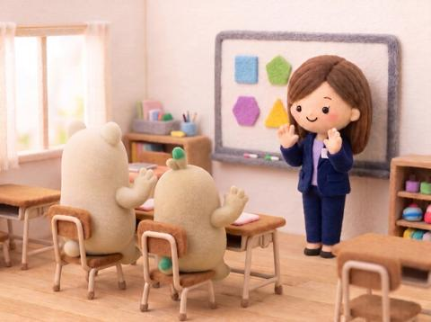
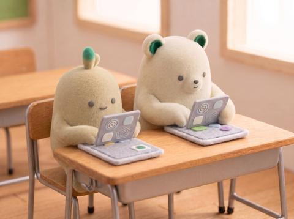
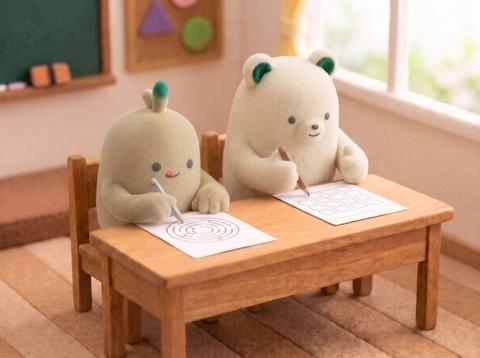
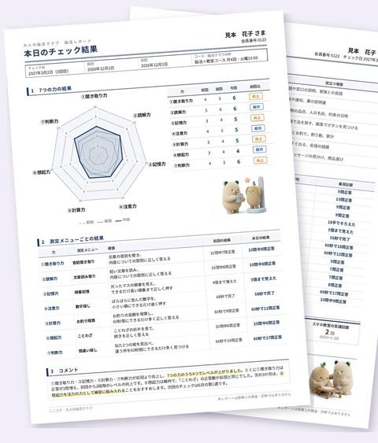

毎日を、
もっと楽しみたい方へ。
楽しく頭を使う習慣、
始めてみませんか？
脳にも、運動習慣を。
週1回を目安に、1回50分。暮らしで毎日使っている力を、楽しく動かします。
1回50分の流れ
みんなで、タブレットで、
紙で。飽きずに50分。
みんなで脳活
先生と一緒に、大きな画面を見ながら指の体操や言葉のリレー、今週の話題のクイズ。声を出して、みんなで。

デジタル脳活
タブレットを一人1台。自分のペースで「今日の4本」に取り組みます。操作はタップだけです。

プリント脳活
漢字やことわざを書く、迷路や図形を写す、パズルを解く。お持ち帰りいただけます。

まとめ
スタンプと来週の予告、会話を楽しむ時間も。続けた分が「私の記録」に積み上がります。
7つの力を、短いチェックで測ります。結果は、初回や前回と比べたグラフと先生からのコメントをまとめた「脳活レポート」にして、お渡しします。続けてきた分が、ひと目で分かります。
初回今回
7つのうち4つの力が、前回より向上！

脳活レポートの見本（A4・2ページ）。お名前と結果は見本です。
通い方と料金
月の回数を選んで、
マイペースに続けられます。
※税込。月1回から8回まで選べます。
まずは1回、
体験してみませんか。
体験（お一人1回・50分）
1,000円
体験の日にそのままご入会いただくと、
入会金（3,000円）は0円です
※税込
まずは、
体験から。
50分、一緒に頭を動かしてみましょう。
予約ページで、ご希望の日時を選んで
お申し込みいただけます。
予約ページで日時を選ぶ
予約ページのアドレスは決まり次第
開催の予定と空き状況を見る
お電話でも受け付けています 電話番号は決まり次第
どの携帯会社にも属していない、スマホの相談窓口
営業時間 10:00〜18:00｜定休日 水曜・木曜